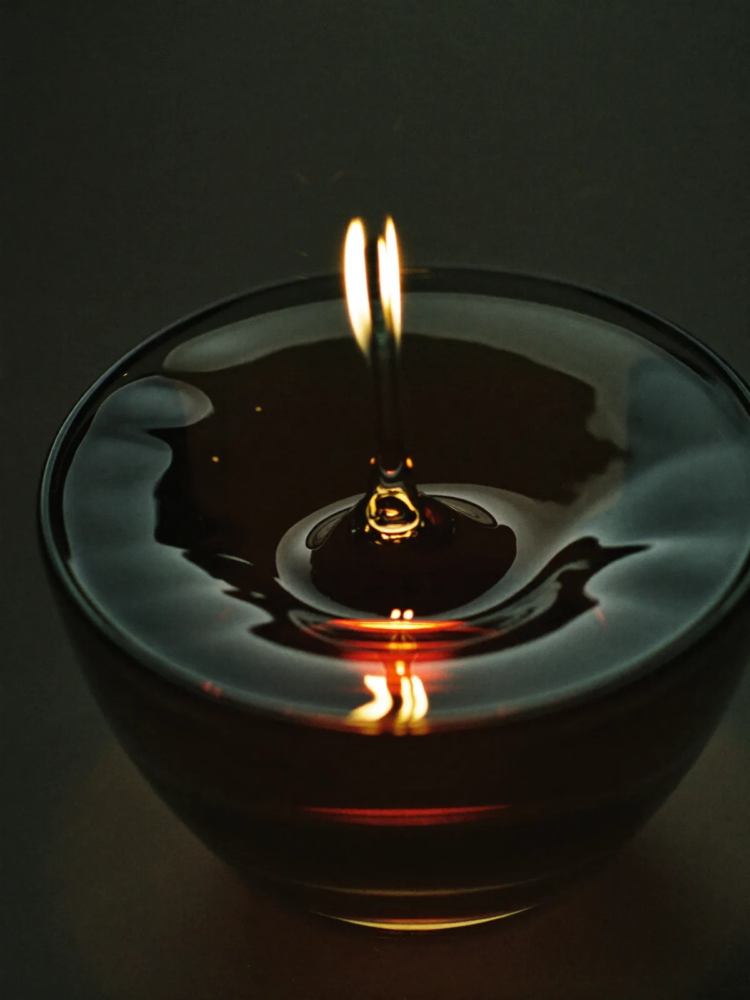

EAU N° 1 · 21H
Nuit d’Encre
The hour of writing. Black bergamot opens like a letter you shouldn't send; iris and wet ink hold the middle; leather closes it, unsigned.
TÊTE — BERGAMOTE NOIRECŒUR — IRIS · ENCREFOND — CUIR
€240 · 50 MLRead its pyramid →